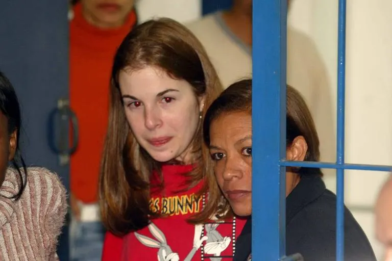

Suzane Louise von Richthofen.
Na noite de 31 de outubro de 2002, em São Paulo, Suzane planejou e facilitou a entrada de seu namorado (Daniel Cravinhos) e do cunhado dele (Cristian Cravinhos) na mansão de sua família. O objetivo era assassinar seus pais, Manfred Albert von Richthofen e Marísia von Richthofen, com golpes de barra de ferro enquanto dormiam, para que pudessem herdar a fortuna da família.
Inicialmente, os irmãos Cravinhos e Suzane simularam um latrocínio (roubo seguido de morte), alegando que a casa havia sido invadida. Contudo, as contradições nos depoimentos, os gastos súbitos de dinheiro dos envolvidos logo após o crime e as evidências materiais levantadas pela polícia rapidamente direcionaram as suspeitas para o trio, que acabou confessando a participação no planejamento e execução.
Condenada em Tribunal do Júri em 2006 a 39 anos e 6 meses de prisão por duplo homicídio qualificado. Cumpriu parte expressiva da pena em regime fechado na Penitenciária Feminina de Tremembé, onde obteve progressão para o regime semiaberto e, posteriormente, alcançou a liberdade condicional em janeiro de 2023.